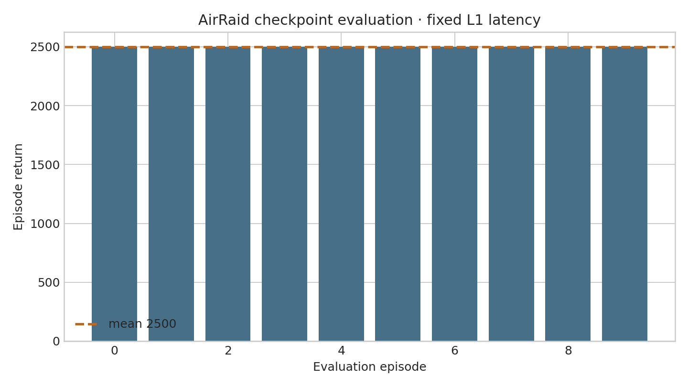
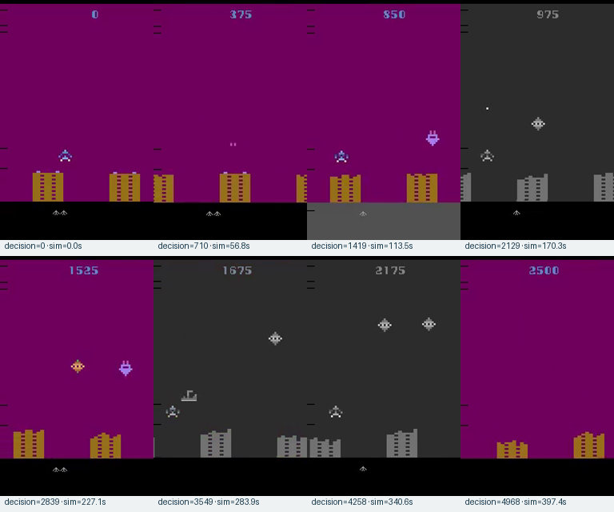
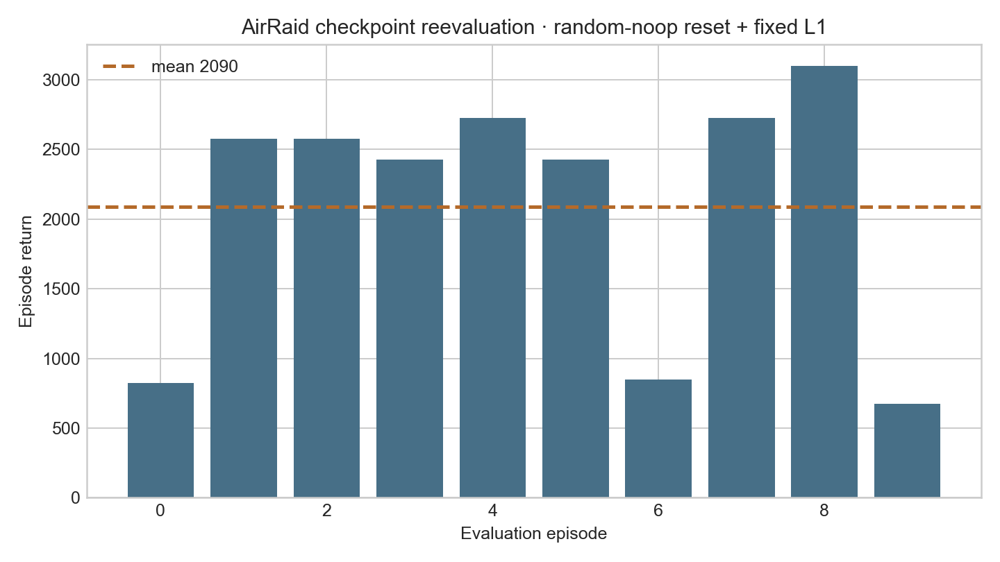

Atari wrapper
Policy receives (1,84,84) uint8; benchmark rendering remains native (250,160,3) RGB.
latency-sensitive-bench / verified release example
A transparent record of how the agent froze one ALE frame as the latency unit, separated CHW policy observations from native RGB rendering, trained fixed-L1 APPO, and evaluated the final checkpoint through latency-bench.
01 · Outcome
Policy receives (1,84,84) uint8; benchmark rendering remains native (250,160,3) RGB.
Four-worker APPO completed 1,015,808 policy decisions at fixed one-frame latency.
The original deterministic-reset evaluation and a new seeded random-noop reevaluation both produced metrics, raw action traces, and video.
No rollout dataset, conversion, SFT, or StarVLA evaluation was requested.
02 · Runtime and design
ALE/AirRaid-v5, ALE 0.8.1, mode 1, difficulty 0.Discrete(6): NOOP, FIRE, RIGHT, LEFT, RIGHTFIRE, LEFTFIRE.(250,160,3) uint8.frameskip=1 step increments ALE episode frame by exactly one.env.render() for evaluation/video and possible later rollout.L1=20 ms.The runtime probe records the exact actions, screen, frame counter, modes, difficulties, and constructor kwargs. ALE does not publish render_fps for this ROM, so the PAL 50 Hz clock is explicit contract data rather than a hidden fallback.
03 · Generated implementation
latency_bench/envs/gymnasium_air_raid.pyRegisters the task, applies WarpFrame, converts HWC grayscale to CHW, and delegates native RGB rendering.
scripts/scaffold_gymnasium_air_raid.pyProbes ALE and emits the PAL clock plus complete task contract.
configs/examples/gymnasium/air_raid/Contains grouped small-model train/eval, benchmark eval, and unexecuted StarVLA eval configs.
tests/envs/test_gymnasium_air_raid.pyChecks CHW/RGB separation, native actions, four-frame decision stride, L1 timing, and config equality.
04 · Immutable task contract
observation_stride = 50 / 12.5 = 4 raw frames · latency_raw_frames = ceil(20 × 50 / 1000) = 1
env:
name: gymnasium
task_name: air_raid
env_id: LatencyBench/AirRaid-v0
registration_imports: [latency_bench.envs.gymnasium_air_raid]
make_kwargs:
base_env_id: ALE/AirRaid-v5
render_mode: rgb_array
screen_size: 84
base_make_kwargs:
obs_type: rgb
frameskip: 1
repeat_action_probability: 0.0
full_action_space: false
mode: 1
difficulty: 0
max_num_frames_per_episode: 108000
env_fps: 50
obs_fps: 12.5
frame_stack: 1
noop_action: noop
action_map: {noop: 0, fire: 1, right: 2, left: 3, rightfire: 4, leftfire: 5}
action_order: [noop, fire, right, left, rightfire, leftfire]The complete emitted contract is in env_block.yaml; all four configs resolve to the same env mapping.
05 · Contract propagation
Base environment advances exactly one emulator frame with the scheduler-selected native action.
Each raw RGB observation is warped to grayscale CHW for the small CNN.
One policy action advances four raw frames; L1 changes the action after the first frame.
Rendered video still uses native RGB while checkpoint IDs retain the six-action order.
| Field | Training | Evaluation |
|---|---|---|
| Base ALE kwargs | Construct no-sticky frameskip-1 task | Reconstruct identical protocol |
| Six action labels | Define categorical output | Decode IDs unchanged |
| No-op ID 0 | Initialize latency queue | First L1 raw frame applies NOOP |
| 50 / 12.5 Hz | Four raw steps per decision | Preserve raw-time semantics |
| screen size 84 | CHW CNN observation | Raw RGB render unaffected |
06 · Verification gates
AirRaid and all current generic examples passed together on the server.
Seed 123 and eight wrapped actions matched observations, rewards, and endings exactly.
First interval applied [NOOP, RIGHTFIRE, RIGHTFIRE, RIGHTFIRE].
Policy: 1×84×84 grayscale; render: 250×160×3 RGB.
07 · Command ledger
vast-4090-latency: Conda latency, Python 3.10.20, Torch 2.11.0+cu128, RTX 4090, Gymnasium 0.29.1, ALE 0.8.1, Sample Factory 2.1.1.
conda activate latency
PYTHON_BIN=python bash third_party/starVLA/examples/rl_games/install/env/demon_attack.sh
python -m pip check
SDL_VIDEODRIVER=dummy pytest -q \
tests/envs/test_gymnasium_air_raid.py \
tests/envs/test_gymnasium_hopper.py \
tests/envs/test_gymnasium_lunar_lander.py \
tests/envs/test_gymnasium_pendulum.py \
tests/envs/test_gymnasium_env_adapter.py \
tests/training/test_gymnasium_sf.py \
tests/policies/test_generic_gymnasium_starvla_policy.pypython scripts/scaffold_gymnasium_air_raid.py \
--report-path /workspace/air-raid-adapt/api_probe.json \
--env-yaml-path /workspace/air-raid-adapt/env_block.yaml
python artifacts/air_raid/repro_scripts/zero_latency_parity.py
python artifacts/air_raid/repro_scripts/l1_scheduler_trace.pySDL_VIDEODRIVER=dummy WANDB_MODE=disabled python -m training.train \
--config configs/examples/gymnasium/air_raid/small_model_train.yamlFour rollout workers completed 1,015,808 policy decisions at 2,278.8 FPS. Latest checkpoint: outputs/examples/gymnasium_air_raid/checkpoints/gymnasium_air_raid_fixed_l1/checkpoint_p0/checkpoint_000001984_1015808.pth.
python -m latency_bench.run \
--config configs/examples/gymnasium/air_raid/small_model_eval.yaml \
--checkpoint-path outputs/examples/gymnasium_air_raid/checkpoints/\
gymnasium_air_raid_fixed_l1/checkpoint_p0/checkpoint_000001984_1015808.pth \
--episode-start 0 --episode-count 10Every original deterministic-reset episode returned 2,500 over 4,969 decisions; scheduled latency was 20 ms.
python -m latency_bench.run \
--config configs/examples/gymnasium/air_raid/small_model_eval_random_noop.yaml \
--checkpoint-path outputs/examples/gymnasium_air_raid/checkpoints/\
gymnasium_air_raid_fixed_l1/checkpoint_p0/checkpoint_000001984_1015808.pth \
--episode-start 0 --episode-count 10Returns were [825, 2575, 2575, 2425, 2725, 2425, 850, 2725, 3100, 675]: mean 2,090, standard deviation 875.3, and mean length 4,026.9. The checkpoint was not retrained.
08 · Evidence ledger
summary · episodes · original stdout · random-noop summary · random-noop stdout





Full checkpoints and raw records remain in ignored outputs/examples/gymnasium_air_raid/; curated evidence only is duplicated here.
09 · Optional continuation
10 · Isolation and limitations
See the normative guide and examples index.